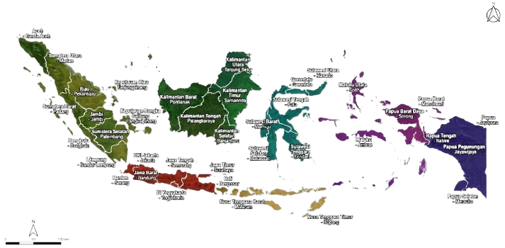

Selamat datang dalam sebuah petualangan nada! Mari temukan melodi-melodi tersembunyi yang ada di alat musik tradisional indonesia.


Apa saja yang bisa di temukan?

Cerita Sejarah & cara memainkan
Memahami Cerita sejarah, pengertian, fungsi, dan cara memainkannya
Provinsi & asal musiknya
Kenali daerah tempat lahirnya setiap alat musik.
Koleksi alat musik tradisional
Menelusuri berbagai macam alat musik dari provinsi yang kamu pilih
Ulasan & Rating
Baca dan tulis ulasan serta rating untuk setiap alat musik tradisional.
Kendang

Kendang adalah instrumen gamelan berbentuk tabung kayu dengan dua sisi membran kulit yang dimainkan langsung dengan tangan untuk berfungsi sebagai pemimpin irama.
Mengapa Memilih alat musik tradisional?
Pelestarian Budaya
Dengan memainkan alat musik tradisional, Anda ikut menjaga warisan budaya bangsa agar tetap lestari.
Suara yang Unik
Setiap instrumen tradisional memiliki suara otentik yang tidak bisa ditiru, menawarkan pengalaman musikal yang khas.
Kolaborasi dan Kreativitas
Bermain alat musik tradisional melatih kerja sama tim dan kreativitas Anda saat menciptakan harmoni bersama.